¿Quiénes somos?
La misión primordial de LOOT-BOX, es unificar criterios y acciones entre todas sus afiliadas, para la mejor defensa de
los intereses de los afectados y afectadas por la dependencia al juego de azar. Para ello:
- Sirve de nexo de unión y orientación conjunta entre sus afiliadas para el mejor desarrollo de sus fines.
- Orienta planes conjuntos de actuación hacia la colaboración con entidades y organizaciones públicas, privadas o científicas, hacia la creación de una clara CONCIENCIA SOCIAL DE LA DEPENDENCIA AL JUEGO DE AZAR, orientando sus actuaciones desde un auténtico enfoque terapéutico, multidisciplinar y cuya prevención y tratamiento parten de un enfoque de Sanidad.
- Sirve de órgano gestor para aquellos miembros que precisen orientación terapéutica, científica, económica, administrativa o cualquier otro tipo de información.
- Da orientación a cuantas personas o grupos lo precisen.
- Actúa como defensor de los intereses, tanto de los miembros de FEJAR como de toda la comunidad, detectando y preservándola de actuaciones que puedan desviar el auténtico fin, o actuaciones de otros grupos, entidades o personas, que traten de encubrir, bajo denominaciones similares, intereses particulares o económicos.
- Defiende la implantación en todas sus entidades federadas, el sistema de Autoayuda y Ayuda Mutua, junto con otros tipos de tratamientos.
- Se solidariza ante cualquier situación social que atente contra la libertad del individuo y/o promueva dependencia.
Misión
La misión primordial de LOOT-BOX siempre ha sido agrupar a todas aquellas Asociaciones, Federaciones o entidades públicas o privadas que en sus Estatutos tengan como primordial el Tratamiento, la Prevención y/o Investigación sobre la dependencia al juego de azar, y que se encamine a la recuperación de estas personas enfermas y sus familiares.
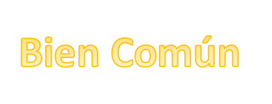
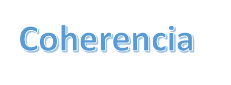
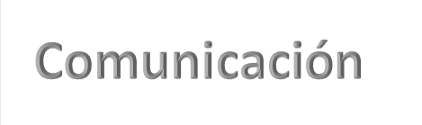
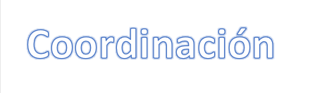
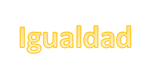
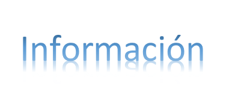
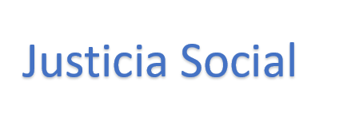
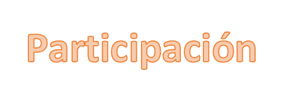
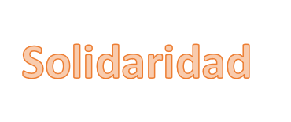
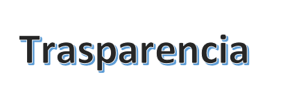
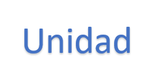